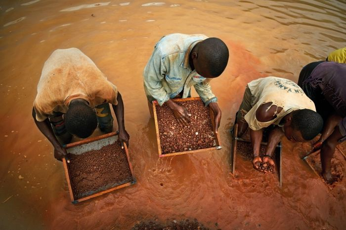

Children can be victims of domestic trafficking.
What to watch out for:
- Away from home
- Signs of violence
- No access to education
- Long work hours
- Dangerous work
- Bad living conditions or no shelter
But faith leaders need to be careful when seeking to help potential child victims.
Some children are sent to live away from home with extended family members.
There they could work lawfully if the work is reasonable it is lawful.
This tradition can be abused, and children exploited. In that case, the child could be being treated unlawfully – and possibly trafficked.
Example – Lake Volta
There is a lot of child labour in the fishing industry on Lake Volta.
Many of the children are trafficked. It’s estimated that at least half the
children working there are trafficked.

In a typical example, children are sent from their homes – often from the
coast – to the lake.
There they work for fishermen, who in turn pay the children’s parents.
Children work on the shore to prepare fish. They also fix nets that get
tangled in trees. There’ve been reports of children drowning after being
trapped.
Trafficked or not?
The key difference with trafficked children is their parents often give them
to fishermen or intermediary recruiters for money.
Parents can sign contracts and receive a lump sum for their child’s work for
up to three years.
Trafficked children working on Lake Volta can suffer the following:
- Don’t have access to education
- Work longer hours
- Do more dangerous work
- Have improper clothing
- Do not have shelter
Possible ways to identify these victims include
- They make no eye contact, hide, or appear physically shaken
- Do not answer questions directly, look at their master for cues
- Have injuries or scars
- Are too far from home to return by themselves
- Feel compelled to continue helping their family financially
- Depend on their “employer” for survival